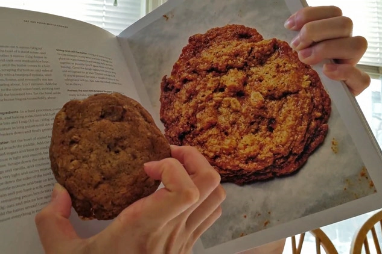
Food | 2/25/21
Our love for baking and cookies brings us back to another Back to Back Baking where Bonnie takes on the challenge of baking Oat and Pecan Cookies only with Emily’s verbal guidance!
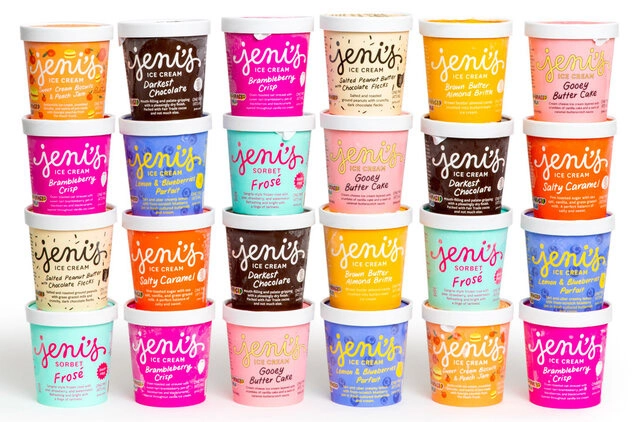
Food | 2/21/21
It's the ice cream that’s been floating around on all our Instagram feeds! After having seen countless influencers and posts about Jeni’s Splendid Ice Creams, we had to give it a try!
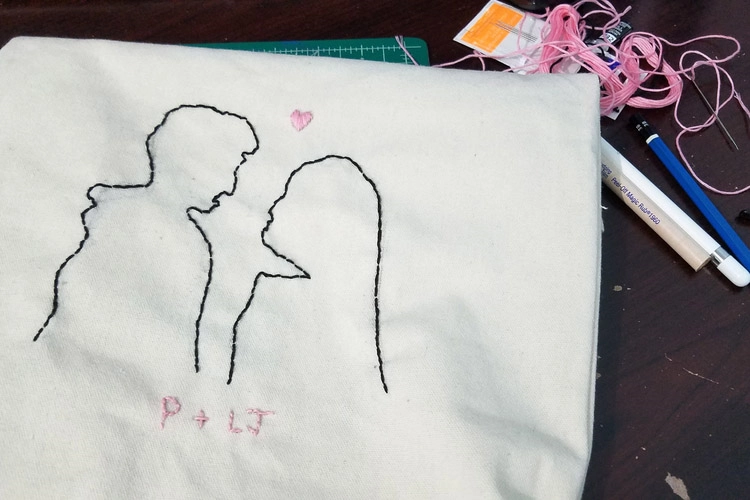
Fun | 2/18/21
Inspired by the release of the final movie in the To All the Boys I’ve Loved Before Series, I decided to DIY something based on the series.
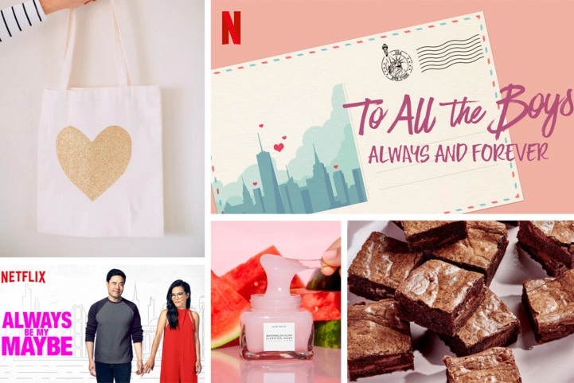
Fun | 2/14/21
Have you stocked up on your chocolates and flowers yet because it's Valentine's Day!! Or rather Galentine's Day for some of us, the best kind of Valentines Day!
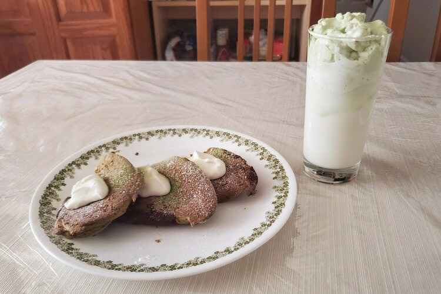
Food | 2/11/21
I’ve been on a little bit of a matcha craze lately and found another recipe that I thought would be great to add to the list --matcha soufflé pancakes!!
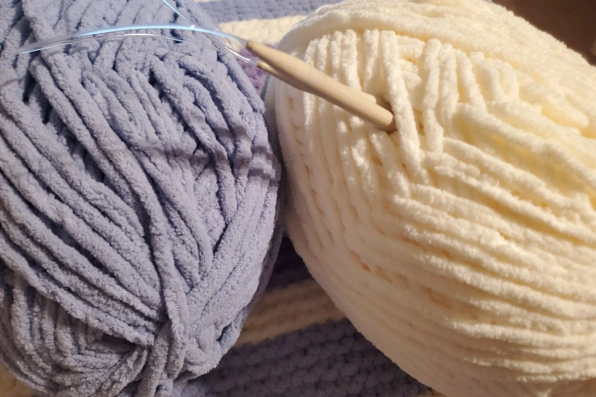
Fun | 2/7/21
This winter I took on one of the largest craft projects I’ve done before, I made a blanket!!
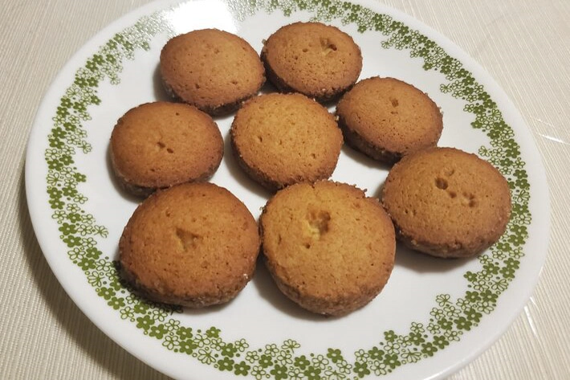
Food | 2/4/21
Thinking about the miso paste that has been living in my fridge for the longest time, I decided to do some recipe exploring! I always knew condiments could be very multipurpose but I never thought something savory could become something sweet!
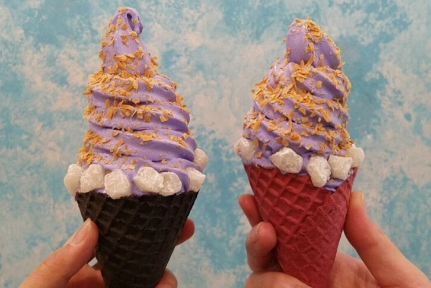
Food | 1/31/21
With the amount of baking that we do, you probably know that we both have a sweet tooth and soft spot for desserts
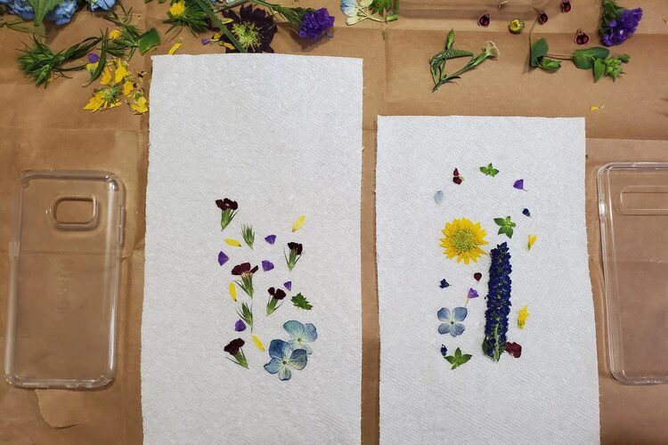
Fun | 1/28/21
As the resin trend continues to grow and our desire to press and dry flowers lingers, it was a no brainer to create some floral resin phone cases. What better combination than natural flowers and resin!!
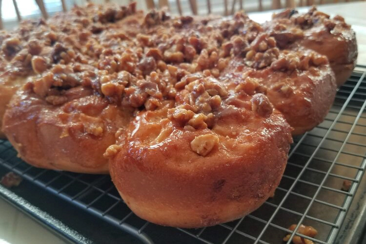
Food | 1/24/21
Who doesn’t love a warm pillowy soft sticky bun or cinnamon roll? It’s like a sweet fluffy cloud that melts in your mouth with every bite!
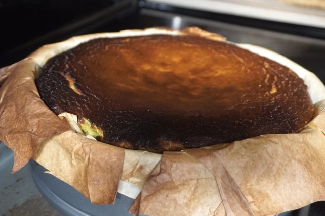
Food | 1/21/21
Having both a love for cheesecake and matcha, I decided that a matcha basque burnt cheesecake would be the perfect baking challenge.
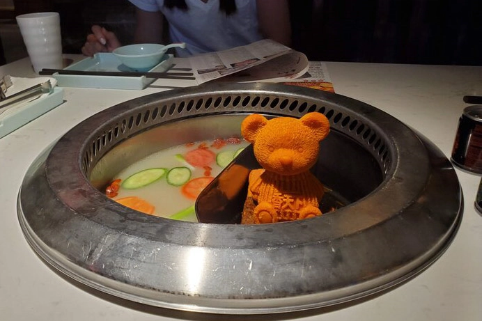
Food | 1/17/21
There is nothing, absolutely nothing, we love more on a cold breezy winter day than this very thing--hotpot.